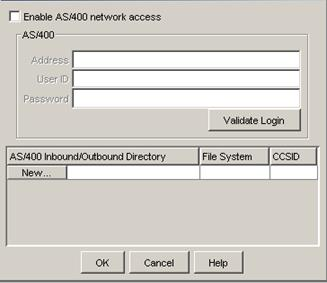

Follow the instructions below to configure the Cleo LexiCom system to
access files on the AS/400.
On the Cleo LexiCom
menu bar, select Configure > AS/400.
The following panel will appear:

If you will only be starting the Cleo LexiCom
application interactively (from the AS/400 "green screen" command line), you
will not need to enable AS/400 network access and the top portion of the
panel may be left blank. This portion of this panel is for running from a
PC and accessing the AS/400 via the network. (See to AS/400 PC Network Access Setup for additional information.)
Now click the New… button on this panel, as shown: